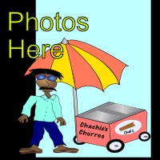

As I mentioned, the Taj Mahal was the last “must see” item on my tourist agenda. I was frankly quite tired of people asking me if I had visited it. I wanted that done and over with. So I arranged a train ticket to Agra from Jaipur. For me there isn't much worth mentioning about this leg of my journey so I will keep this entry brief.
I disembarked the train and found a minimally run down hotel within walking distance of the site. Agra struck me as a pit; a run-down place that hosts the most heavily touted tourist attraction in India. It seemed to me that tourism, both international and domestic, had completely subsumed the town. Being from Laguna Beach I know first-hand how negatively tourism can affect a community. Other than the Taj I did not look for or find any authentic cultural sights. The community seemed to be completely oriented toward the tourists.
Perhaps through an effort to erase the Corona virus from my mind, I have neglected to mention it thus far. But this was spring of 2020 and the virus was worming its way through the world by this time. The Indian authorities had closed the Taj for a period due to concerns around the virus. So my journey to the Taj was delayed, even after arriving in Agra. I think I stayed three nights there total and saw the Taj the second day.
When the Taj finally opened, I walked the short distance from the hotel and paid my thirty plus dollars for entry. I was prepared to thwart the notorious touts of the Taj Mahal. They were insistent and obnoxious but not as threatening as I had heard. I had had a good five months of practice dodging Indian touts by this time. I managed to brush off their efforts to bamboozle me into hiring “a guide.” The Taj was magnificent. The level of detail and craftsmanship involved was staggering. Some people consider this to be the most impressive building in the world. The way the many tiles and designs melded into each other so seamlessly made it apparent that considerable mathematics had been involved in the creation of the Taj.
I was rushed through the complex as part of a never-ending herd of selfie-snapping visitors. After funneling through the complex we were not allowed to linger as more tourists were lined up to be herded through. When an attraction is so over-run, for me it kills much of the delight that such an impressive monument would normally garner. But finally I had seen it and gotten it over with. With the growing heat of Spring I was now headed to seek refuge in the mountains via Delhi. My contact made arrangements to meet me at a sort of bus terminal there, where I would then embark on a night bus.
Right-click below to open in new tab
Click below for next chapter